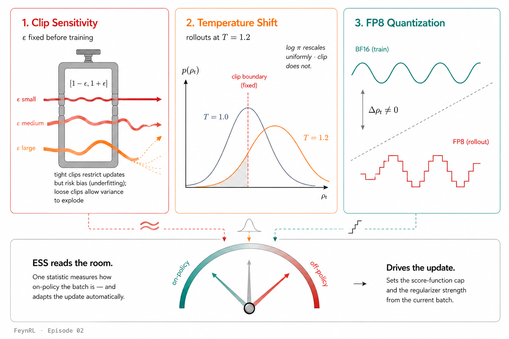

In any large-scale RL post-training pipeline, the data your optimizer sees is almost never on-policy, meaning it was generated by a slightly different version of the model than the one currently being trained. You take several optimizer steps on the same batch of completions. Your rollout engine runs concurrently with training, so by the time a batch arrives, the policy has already moved. Your rollouts are generated in FP8 while training runs in BF16, producing different token-level probabilities. Each of these introduces off-policy mismatch — and current methods handle it by adding more hyper-parameters that must be tuned before training begins.
We take the opposite path.

In a new paper, Trust the Batch: A Data-Adaptive Framework for Large Model Policy Optimization, we show that fixed clipping itself, not the value of the clip range, is what causes fragility in RL post-training. Rather than propose another clip variant, we step back from the fixed-clip framework entirely and replace it with a single adaptive statistic computed from the current batch: the Effective Sample Size (ESS). ESS measures how on-policy the current batch is and uses that signal to drive both the score-function cap and an off-policy regularizer, no fixed parameters to set before training. We apply this framework at large-model scale, showing that it matches or exceeds tuned GRPO baselines across every setting we test, including the one where fixed clipping fails catastrophically, while introducing no new hyper-parameters and removing several existing ones.
The Fix: Measure, Don't Guess
The core idea is simple. Instead of fixing a clip range $\epsilon$ before training and hoping it works across all regimes, measure how on-policy the current batch is and use that measurement to drive the update. The tool for this measurement is the Effective Sample Size of the per-token importance ratios:
Effective Sample Size (ESS)
$$\mathrm{ESS}(\mathcal{B};\,\theta) = \frac{\hat{\mathbb{E}}_{\mathcal{B}}[\rho_t]^2}{\hat{\mathbb{E}}_{\mathcal{B}}[\rho_t^2]} \;\in\; \left[\tfrac{1}{|\mathcal{B}|},\;1\right]$$
When ESS ≈ 1, the batch is on-policy and the update behaves like standard GRPO. When ESS falls, the batch is stale or mismatched, and the update tightens automatically; no retuning required.
P3O uses this single statistic to set both the score-function cap and the strength of an adaptive regularizer:
The P3O Objective — No Clip, No New Hyper-parameters
$$\mathcal{L}_{\mathrm{P3O}} = -\mathbf{sg}\!\left(\min\{\rho_t,\,e_{\mathcal{B}}\}\right)\,\log\pi_\theta(y_t\!\mid\!c_{<t})\,A \;+\; (1 - e_{\mathcal{B}})\,\mathrm{KL}(\pi_\theta\,\|\,\pi_{\mathrm{old}})$$
The first term caps the score-function weight at the batch ESS rather than a fixed clip ($\mathbf{sg}$ denotes stop-gradient: the cap is treated as a constant during backpropagation). The second term adds a KL regularizer whose strength is exactly $(1 - \mathrm{ESS})$, large when the batch is off-policy, zero when it is fresh. Every token in the batch contributes to the update; no data is wasted.
Compare this with existing methods. GRPO, DAPO, and GSPO all retain a fixed clip range $(\epsilon_\ell, \epsilon_h)$ that must be chosen before training. P3O replaces it entirely with a batch-adaptive quantity.
| Method | Clip Range | Adaptive? | New HPs |
|---|---|---|---|
| GRPO | $[1-\epsilon,\,1+\epsilon]$ | No | $\epsilon$ |
| DAPO | $[1-\epsilon_\ell,\,1+\epsilon_h]$ | No | $\epsilon_\ell, \epsilon_h$ |
| GSPO | Sequence-level $\epsilon^{\mathrm{seq}}$ | No | $\epsilon^{\mathrm{seq}}$ |
| P3O | $\min\{\rho_t,\,e_{\mathcal{B}}\}$ | Yes | None |
FeynRL Made This Possible
All experiments in the paper were run on
FeynRL,
the algorithm-first post-training framework introduced in
Episode 01. FeynRL's separation of concerns meant that going from GRPO to P3O
was a single-file change: the loss computation inside
compute_policy_loss(...). Rollouts, orchestration, distributed training, all untouched.
The change is small but meaningful. Where GRPO computes a clipped surrogate, P3O computes the batch ESS, caps the ratio, and adds an adaptive KL term:
@@ compute_policy_loss(...)| 1 | raw_logratio = (logprobs - old_logprobs).to(torch.float32)
|
| 2 | logratio = torch.where(mask_bool, raw_logratio, ...) |
| 3 | ratio = torch.exp(logratio) |
| 4 | unclipped = ratio * adv |
| 5 |
clip_adv = torch.clamp(ratio, 1.0 - clip_low, 1.0 + clip_high) * adv
|
| 6 | pi_sum = -(torch.minimum(unclipped, clip_adv) * mask).sum()
|
|
|
|
|
|
| 1 | raw_logratio = (logprobs - old_logprobs).to(torch.float32)
|
| 2 | logratio = torch.where(mask_bool, raw_logratio, ...) |
| 3 | ratio = torch.exp(logratio) |
| 4 | ess_factor = self.calculate_ess(ratio, mask_bool) |
| 5 | kl_behavioral = compute_kl(logprobs, old_logprobs) |
| 6 | rho = torch.clamp(ratio, min=0, max=ess_factor) |
| 7 | pi_sum = -(rho.detach() * logprobs * adv * mask).sum() |
| 8 | loss = pi_sum + (1 - ess_factor) * kl_behavioral |
|
FeynRL's off-policy infrastructure — its async engine, replay buffer, and weight-sync modes — made it trivial to test P3O across on-policy, asynchronous, and mixed-precision settings in a single codebase, without special code paths for each regime. These experiments were run on FeynRL v0.1, which has now exited beta with full support for sync and async training, FP8 rollout engines, and the P3O objective described here.
How Sensitive Is GRPO to Its Clip Range?
We first ask the most basic question: does the clip range matter? We sweep $\epsilon \in \{0.2, 0.4, 0.6\}$ for GRPO on Qwen3-4B-Thinking and compare with a single P3O run. No other hyper-parameters change.

The spread is enormous. GRPO with $\epsilon = 0.2$ collapses to 0.13 reward by step 35; $\epsilon = 0.6$ stays above 0.50. P3O matches or exceeds the best clip setting — without any clip parameter at all. The same result holds across model families (see the paper for Qwen2.5-1.5B).
Off-Policy: Temperature Shift
Sampling rollouts at a non-standard temperature $T \neq 1.0$ uniformly rescales token log-probabilities, shifting every per-token ratio $\rho_t$ by a constant factor. For GRPO, this offset falls either inside or outside the fixed clip interval, a bias that cannot be corrected without retuning $\epsilon$. P3O's ESS directly measures this shift as ratio concentration and adapts automatically.

At $T = 1.2$, GRPO rises to $\sim$0.70 reward but then collapses to 0.09 by step 32. P3O reaches $\sim$0.69 and stays stable at $\sim$0.60 through the full run. The ESS detects the induced ratio shift and tightens the cap and regularizer accordingly; no retuning required.
FP8 Mixed Precision: Where Fixed Clipping Fails
The most practically important off-policy setting is mixed-precision training. A common production strategy is to train in BF16 but generate rollouts in FP8 — the FP8 engine is faster, meaning higher throughput. But the FP8-quantized rollout policy produces different token-level probabilities than the BF16 training model, pushing $\rho_t$ away from one. This is off-policy data created by the systems layer, and it cannot be avoided without giving up the throughput gains.
The Headline Result
Under FP8 rollouts, GRPO's reward collapses from 0.54 to 0.02 — a 96% drop. P3O holds steady at 0.52. The only difference is the objective.

The divergence begins around step 16, when the cumulative effect of FP8 quantization noise pushes enough tokens outside GRPO's fixed clip window that the effective gradient degrades. By step 25, GRPO's reward is below 0.15; by step 35, it is effectively zero. P3O's ESS tracks the quantization-induced ratio drift and adjusts the cap and regularizer at every gradient step, maintaining quality without any change to the training configuration.
The training-time stability translates directly to held-out benchmarks. We evaluate checkpoints on five mathematical reasoning benchmarks (AIME24, AIME25, AIME26, AMO-Bench, AMC):
| Training Method | AIME24 | AIME25 | AIME26 | AMO | AMC |
|---|---|---|---|---|---|
| Baseline (16k) | 0.371 | 0.471 | 0.396 | 0.019 | 0.618 |
| FP8 GRPO iter 15 | 0.154 | 0.250 | 0.160 | 0.021 | 0.499 |
| FP8 GRPO iter 30 | 0.002 | 0.000 | 0.002 | 0.019 | 0.029 |
| FP8 P3O iter 15 | 0.158 | 0.237 | 0.179 | 0.024 | 0.478 |
| FP8 P3O iter 30 | 0.173 | 0.254 | 0.175 | 0.026 | 0.529 |
GRPO iter 30 is near-total collapse across all benchmarks. P3O iter 30 improves over iter 15 on most benchmarks — continued training is beneficial rather than destructive.
What This Means
The experiments tell a consistent story across three axes. Fixed clipping is sensitive to its value (clip sweep), fails under systematic ratio shifts (temperature), and collapses catastrophically under precision mismatch (FP8). P3O handles all three regimes with the same objective, the same code, and zero hyper-parameter changes. The mechanism is simple: measure the batch's effective sample size and use it to modulate the update.
Why This Matters for Practitioners
If you're training with FP8 rollouts, async pipelines, or reusing rollouts across epochs (all things that save time and compute), you don't need to retune your objective. P3O handles the off-policy mismatch automatically. This makes off-policy data a feature rather than a burden: you can reuse rollouts from older or different policies, run faster with quantized inference, and pipeline generation with training, all inside one objective.
For the full theoretical treatment, proofs, and additional experiments (async training, cross-policy mixing, two-anchor extensions), see the paper.
Try It Yourself
P3O is available in FeynRL today. The algorithm is a single file, the loss is a single function, and the configs are a single YAML change from GRPO. To get started:
- P3O algorithm documentation — math, pseudocode, and implementation notes.
- FeynRL repository — the full framework, now at v0.1.
- Results page — training curves and benchmark summaries.
- Episode 01 — the FeynRL introduction and architecture overview.